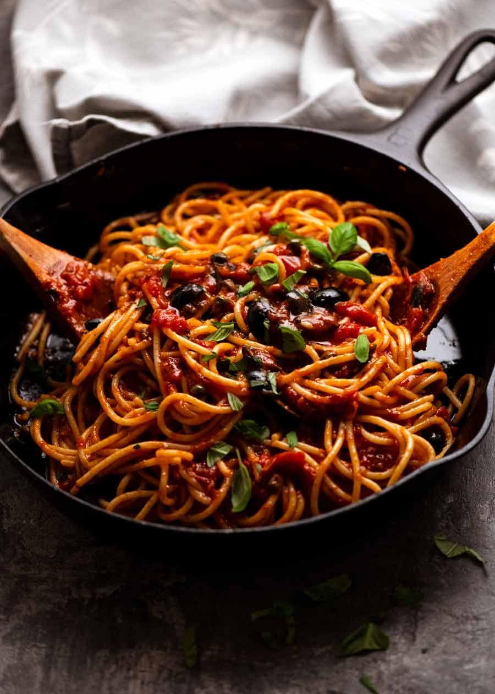

Brandon's Puttanesca

Lets talk about my boyfriend's puttanesca recipe
Ingredients
- 1 28 oz can diced tomato
- 4 cloves garlic, dices
- 4 fillets anchovy
- 1/4 cup capers
- 1/2 cup kalamata olives, roughly chopped
- 1 tsp crushed red pepper
- caper and olive juice, to taste
- 1 lb fettuccine
Steps
- Cook pasta to package instructions
- Heat oil on medium in large, deep skillet
- When oil is hot, add garlic and anchovy
- Cook until garlic is lightly browned and anchovy is dissolved
- Add tomatos and red pepper
- Add capers and olives
- Simmer for about twenty minutes, adding caper and olive juices to taste
- Salt to taste, and serve!